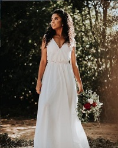
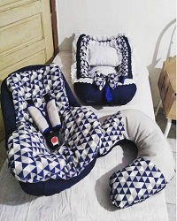

Guerreira, meu exemplo de superação!
"Ela fez da dor mais um motivo pra não desistir. Ela não deixou que a tristeza ocupasse um lugar do seu sorrir. Ela se fez forte quando o mundo ao seu redor caía. Ela enfrentou a escura noite, viu raiar o dia". Gislaine e Mylena
Um pouco sobre sua história
Analice, seu nome vem da junção de dois belos nomes Ana, que significa "cheia de graça" e Alice, que significa "nobre". Mas muito mas das qualidades que seu nome traz Analice é uma guerreira, 6ª filha de uma família grande com 14 irmãos, ela ajudou sua mãe na criação dos mesmo , logo após a morte prematura de seu pai, aos seus 12 anos. Sendo assim, participante ativa na criação dos seus irmãos menores que a consideram como mãe. Hoje com 58 anos, Analice é mãe, esposa, intercessora, e costureira e ajuda sua igreja e comunidade. Costurando roupas para as atividades religiosas, neste período de pandemia, seu principal meio de traballho foi seu ateliê de costura. Visite seu Instagram...
Conheça um pouco do seu trabalho!
Linha Mãe e Filha
Linha Moda Feminina
Linha Bebê

Linha Casa
Autora: Aline do Prado Pedagoga|Aprendiz Front-end
Meu Github